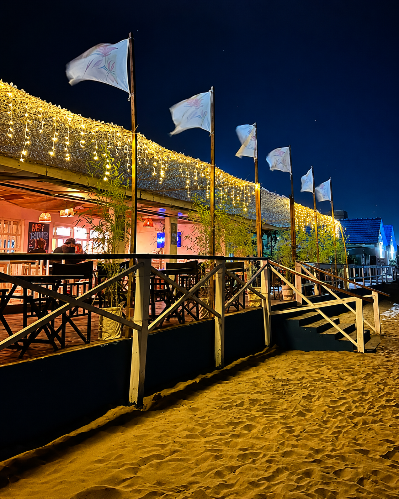
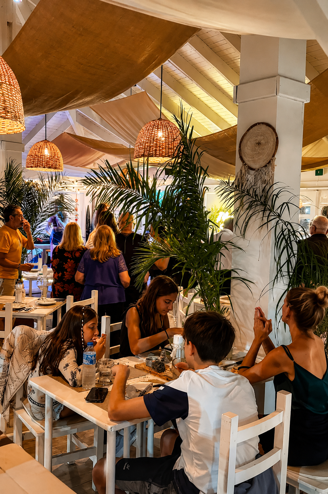
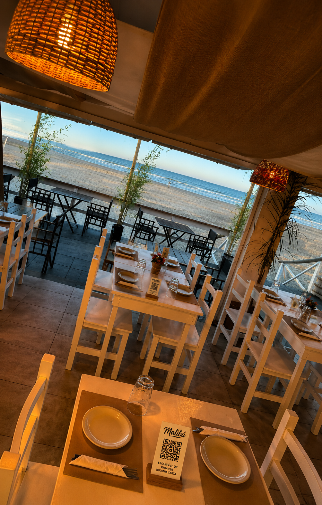
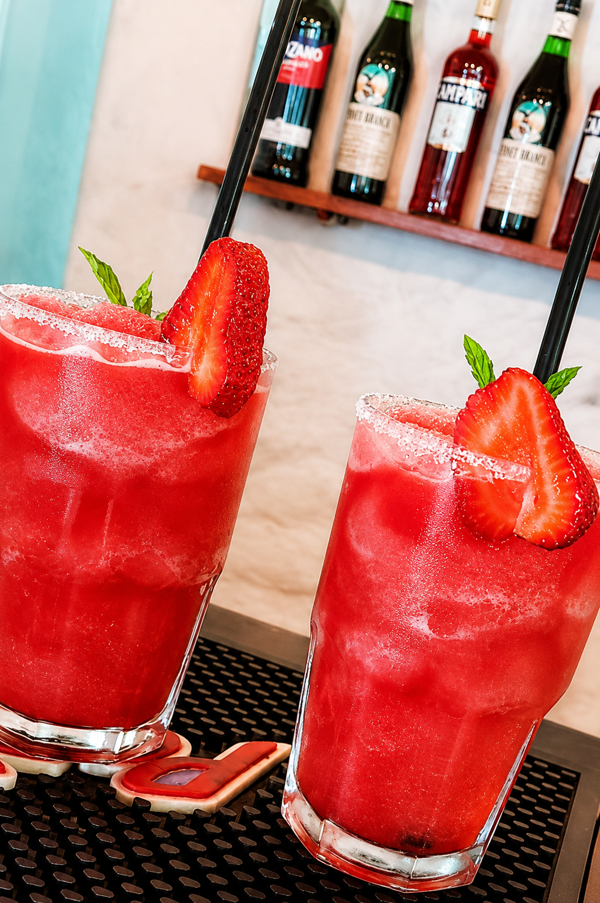
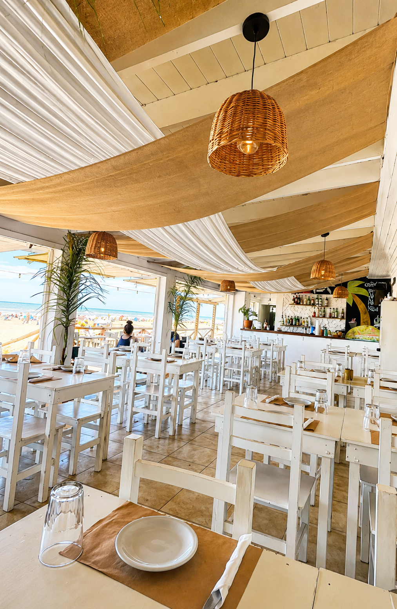

Ambiente cálido y playero
Malibu combina estética costera, luces cálidas y espacios cómodos para pasar un buen momento en pareja, familia o con amigos.

Malibu combina estética costera, luces cálidas y espacios cómodos para pasar un buen momento en pareja, familia o con amigos.

El parador puede reservarse para cumpleaños, reuniones empresariales, fiestas familiares y celebraciones frente al mar.

Cada mesa puede tener su QR para que el cliente vea productos, precios y realice pedidos conectados al panel administrativo.

Una propuesta con mariscos, carnes, milanesas, bebidas, tragos y postres para resolver almuerzos, cenas y after beach.

Desde la web el cliente puede pedir fecha, cantidad de invitados, catering, música, fotografía y otros servicios extra.